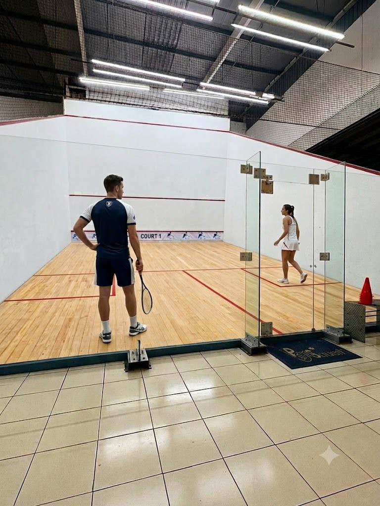

Propuesta 1 · Nueva
La directa
Blanca y sin rodeos: el eslogan gigante sobre la foto de la cancha, un acordeón con tarifas y horarios, carrusel de reseñas y footer oscuro. Todo en un scroll corto.
Ver propuesta 1 →